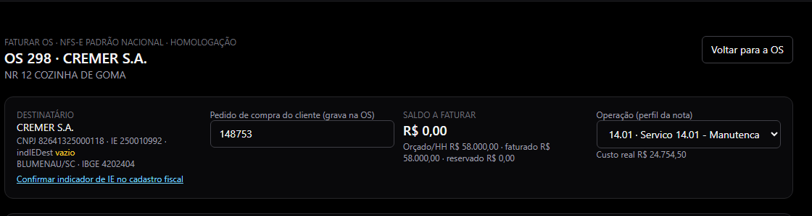
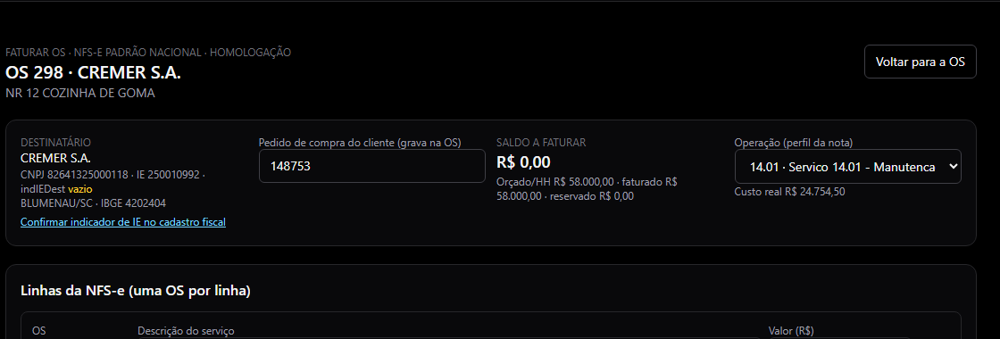
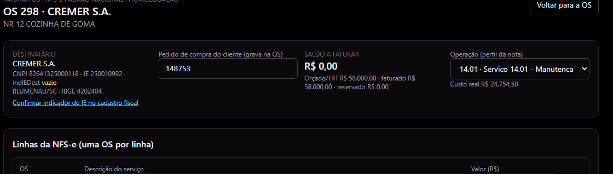
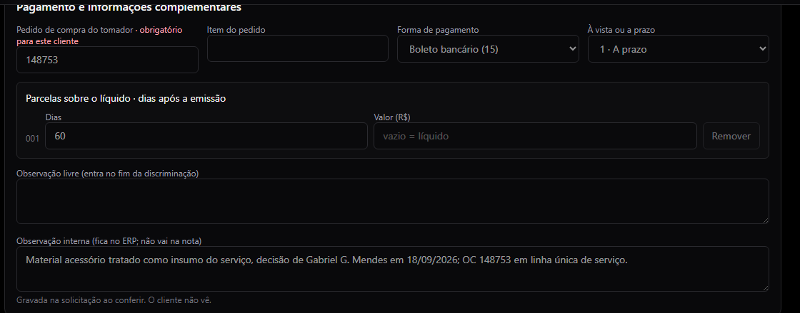
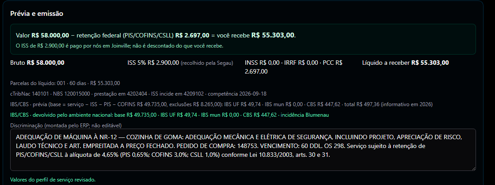
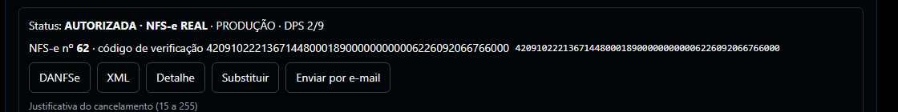

Onde: OS › a OS › Faturar › NFS-e. Telas de 18/09/2026, da OS 298 (CREMER, adequação de máquina à NR-12, R$ 58.000,00 → NFS-e real nº 62). Quem faz: perfil FATURAMENTO, FINANCEIRO ou ADMIN.
Serviço é NFS-e; mercadoria é NF-e. Nesta tela sai uma nota de serviço com o valor combinado; o material que a equipe usou na OS entra como custo, não como venda — ele não aparece na nota e não baixa estoque de novo.
Passo 1 Escolher o serviço. Na OS, botão Faturar, aba NFS-e. Em Operação de serviço confira o perfil: o sistema mostra o código com a explicação em português (ex.: 14.01 · conserto, manutenção ou adequação de máquina do cliente). Se o serviço não for esse, troque o perfil no alto da tela.

O código do serviço vem com a explicação e um exemplo ao lado.
Passo 2 Conferir a linha e o valor. Em Linhas da NFS-e, o valor vem do saldo da OS. Escreva a descrição do serviço: o resultado entregue, sem "mão de obra" e sem horas. O total da linha é o valor da nota.

Uma linha por OS, com a descrição do resultado e o valor.
Passo 3 Retenções e local. As retenções vêm da regra do serviço e do cadastro do cliente; você só mexe quando a tela deixa. ISS retido pelo tomador? — marque só se o cliente avisou que vai reter, porque isso muda o valor que a Segau recebe. Confira o município da prestação e a competência (mês da emissão).

Retenções: o que é regra do serviço aparece travado; o ISS retido tem a legenda de quando marcar.
Passo 4 Pagamento, pedido e observações. Preencha o pedido de compra do tomador (obrigatório nos clientes que exigem: a tela marca em vermelho e não deixa conferir sem ele), a forma de pagamento e os dias do vencimento. A observação livre entra no fim da descrição da nota — o cliente lê. A observação interna fica só no ERP.

Pedido obrigatório, parcela de 60 dias, observação livre (vai na nota) e observação interna (não vai).
Passo 5 Conferir e emitir o ensaio. Clique em Salvar rascunho e conferir. O sistema calcula tudo e mostra a prévia. Confira o quadro verde: valor − retenções = você recebe. Depois, Emitir NFS-e em homologação — é um ensaio, sem valor fiscal, para o sistema conferir a nota antes da real.

Prévia: o líquido em destaque, os impostos, o IBS/CBS e a descrição final que vai na nota.
Leia em voz alta, com a OC do cliente na mão:
| Confira | Na OS 298 ficou |
|---|---|
| Tomador (nome e CNPJ) | CREMER S.A. · 82.641.325/0001-18 |
| Valor da nota | R$ 58.000,00 |
| Você recebe (líquido) | R$ 55.303,00 |
| Retenção do cliente | R$ 2.697,00 (PIS/COFINS/CSLL, 4,65%) |
| ISS | R$ 2.900,00 pago pela Segau em Joinville (não desconta do que recebemos) |
| Vencimento | 60 dias |
| Pedido de compra na descrição | 148753 |
| Descrição | o resultado entregue, sem "mão de obra" e sem horas |
A NFS-e não aceita carta de correção de valor nem de retenção. Errou valor, retenção, tomador ou descrição: só substituindo (nota nova que referencia a errada) ou cancelando — em Joinville, até o último dia do mês em que a nota foi emitida. Por isso a conferência é agora, não depois.
A nota real só sai depois que o responsável fiscal liberar o perfil para aquele ensaio. Com a liberação feita, aparece o botão Emitir NFS-e real (produção). Confirme e espere o retorno: a tela passa a mostrar AUTORIZADA · NFS-e REAL com número, código de verificação, DANFSe e XML.

Nota real autorizada: número, código de verificação e os botões de DANFSe, XML e envio por e-mail.
Envie ao cliente a DANFSe e o XML (botão Enviar por e-mail) junto com o boleto do vencimento combinado.
| O que aparece | O que fazer |
|---|---|
| "Este cliente exige o número do pedido de compra (OC)" | Preencha o campo do pedido. Se o cliente não usa OC, peça ao cadastro para desmarcar a exigência na ficha dele. |
| "MÃO DE OBRA é proibido na descrição" | Descreva o resultado entregue (o que foi adequado, instalado, consertado), não o esforço. |
| "Perfil de serviço precisa estar liberado para esta homologação" | Normal: o ensaio saiu, falta o responsável fiscal liberar o perfil para ele. Chame quem cuida do fiscal. |
| Bloqueios com nome de campo (cadastro do cliente, competência, município) | Cada bloqueio traz o caminho para corrigir. Corrija e clique em Reconferir. |
| "Competência precisa ser no mês da emissão" | Ajuste a competência para o mês em que a nota vai sair. |
| Ensaio REJEITADA | Abra o detalhe, leia o motivo e chame o responsável fiscal. Não tente de novo sem entender. |